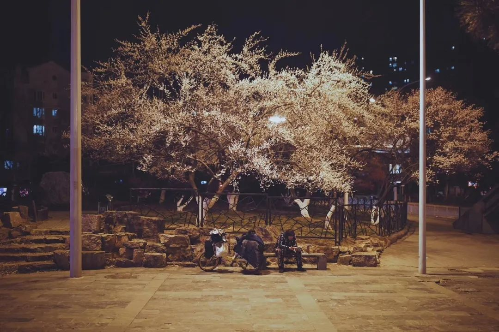
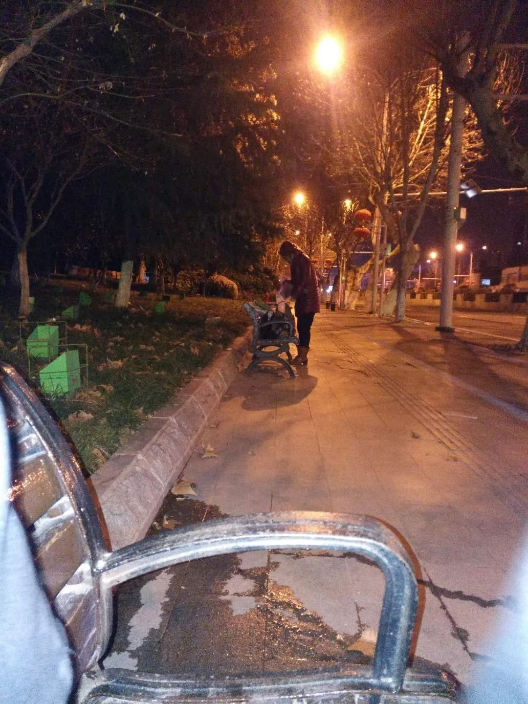
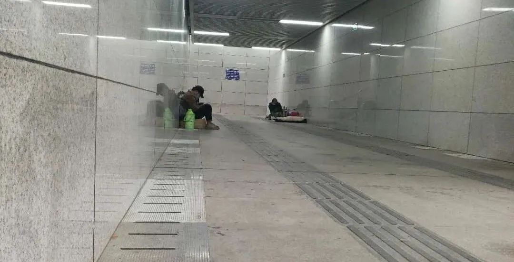

武汉外卖小哥：害怕是正常的，但我希望自己一直是冷静的
原文链接 备份链接 ** 在武汉这座几乎停摆的城市里，一群外卖小哥和他们背后的团队还在正常运转。他们需要每天前往收治新冠肺炎的定点医院，给一线医护人员送餐，是连接这座城市的动线。这项“医护关爱计划”，是在1月26日开始的，饿了么联 …

2月25日上午，湖北省新冠病毒肺炎疫情防控指挥部发布公告，「对因离鄂通道管控滞留在湖北、生活存在困难的外地人员，由当地政府及有关方面提供救助服务」。公告发布的那天，浙江义乌人徐强已经在武汉流浪了20多天。那时，他正蜷缩在武汉黄鹤楼公园附近的地下通道里，和他在一起的，还有其他6个出于不同原因聚集在此的流浪者。武汉刚下过大雨，通道湿滑，徐强抱着他仅有的两个包，盼着外头出太阳。
因为8小时的误差，徐强成了一名流浪汉。他已经买好了1月23日下午6点回义乌的硬座票，只想在武汉中转一夜，到了火车站才知道，上午10点，武汉封城。从街边叫卖口罩的小贩口中，他第一次得知了武汉的疫情。
在武汉，无家可归者有不同的流向。一部分人驻守在有热水、可以捡到剩饭的医院，一部分人居住在地下停车场，剩下的，像徐强一样，孤独地在不同公园的长椅上漂流。城市停摆后，衣食住行都成了问题，他们钻往这座城市的各个缝隙，挖取可以维生的部分。
冷，饿，是生理上的痛苦，让48岁的徐强喘不过气的，还有生活的停滞、债务的累积带来的巨大压力。在武汉流浪像是一次急速下坠，对徐强来说，人生的下坠从2018年就开始了。他失去了一百多平米的临街店铺，有时候他想不明白，为什么一个不好吃懒做也不搞歪门邪道的人，会这么不顺呢？
2月27日凌晨，徐强的坠落终于有了托底。他和其他3名流浪者得到了安置，住进了酒店。徐强告诉《人物》，20多天来，他终于睡了一个好觉。
以下是徐强的自述。采访在2月27日进行。
文｜****林秋铭
编辑｜****槐杨
1
1月23日，大年二十九下午，我到了武昌火车站。没进站我就觉得奇怪，怎么车站稀稀拉拉的，没有什么人。入口被封上了，进不去。车站的工作人员告诉我，「封城了。」
我不是武汉当地人，也不是外来务工的，我只是路过这里。最近一年，我在杭州和宜昌两头跑业务。过年前，我在宜昌跑完，准备回义乌老家。宜昌有直达义乌的车，但时间点不好，非常晚。如果从武汉转车到义乌，早上6点多到，回家正好可以吃中饭。于是我在武汉休息一夜，买好了农历二十九下午6点多回义乌的车票。可是，封城了。什么是封城？我想着，大概武汉的火车或者路段出了问题，维修好了就会通车。
这时候，有人提着一包口罩走过来，「口罩要不要？」「要口罩干吗？」我问。他挺奇怪，「你还不知道？武汉发生了疫情，要戴口罩。」我才知道武汉有肺炎这回事，赶紧买了个一次性口罩，讲了价，15块钱。
我当时想，这个病不会拖很久，就回酒店了。后面三天，我去过好几次火车站，不停问外边执勤的工作人员，什么时候能开？他总说，等通知。我越来越慌，心想完了，这肯定是大事。
酒店每天都在涨价，第一天130，第二天170，第三天就要200多。我只能换着酒店住，一旦一家酒店的价格超过200，就换一家更便宜的，前前后后换了4家。买不到酒精，那只一次性口罩被我反复煮，煮好了用电吹风吹干，直到外面起了一层毛，才把它丢了。
除夕那天，我一个人窝在酒店，吃了一桶泡面。老婆孩子都回到了浙江，只有我困在外面。我跟他们视频，他们俩看着我，不说话，哭了。
来武汉之前，我身上只有不到2000块钱，住酒店几乎薅光了所有的钱。外卖也是一天一个价。住了11天酒店，只剩下200多。我算了算，不能再住下去了，还得吃饭。只好把房退了，背着背包，拎着袋子，走出酒店，开始流浪。

滞留在武汉的外地人睡在地下车库 尹夕远 摄
2
我不知道自己能去哪儿，沿着那条街胡乱地走，走了一两个小时，走累了，我走进一个公园，躺在长椅上，靠着背包睡着了。一个保安把我喊醒，「不准在这里睡！」那我能在哪里睡呢？后来我才明白他的意思，不能躺在椅子上，但是坐在椅子上是被允许的。我就用背包把自己撑起来，靠在背包上睡。
我想不到怕，身上除了手机就是衣服，有什么怕的？人都怕鬼，这街上人都没有见到，哪有鬼？都是流浪鬼。
凌晨四点，我被冷醒了。双脚冻得没有劲儿，我只好起来走路，走到了早上七点钟。太阳出来了，阳光晒在身上好暖。趁着阳光，我靠在路边一条长椅上又睡了会儿，就这样过了流浪的第一天。
这二十多天，我睡过的地方太多了，都不好意思说，感觉丢人。我换了五六个地方了，去过汽车站、公园、电影院、地下室，有的地方露天，躲不了雨；有的地方用建筑工地那种铁板封住了，进不去；有的地方太冷了，晚上睡得腰痛。换来换去，公园里的木板凳睡起来最舒服。公园里有洗手间，还能在里面刷牙和洗脸。开始流浪后，我再也没有洗过澡洗过头，身上总有一股味道。
不睡觉，我就走路。武汉的街头看不到什么人，偶尔碰到几个，盯着我，看我拖着背包，都离得远远的。他们认得我是流浪的人，嫌我。但我没办法，还是得不停地走。只有走起来才能不那么冷。停在那里，寒风呼呼地吹。最怕下雨，没有伞，只能到处找可以躲的屋檐，还不能老站在屋檐底下，必须得运动，得在不同的屋檐下穿梭。
一整天，我未必能吃上一顿饭。所有饭店都封闭了，街上什么都没有。我只能在外卖平台上点外卖，一刷，大部分店都打烊了，剩下的又贵得很，60、70，哪儿吃得起。只有饿到全身无力的情况下，我才舍得叫外卖吃，比如今天点了，明后天就得饿着。流浪的这20多天，我只点过6次外卖。有一家重庆砂锅的外卖最便宜，36块钱一份。有一回运气好，点到了26块钱的盖浇饭，是最便宜的外卖了，收到一看，一大滩辣椒铺在米饭上，只能夹出两片肉。
好多超市也关了，要能进超市，我就买包泡面，找不到开水，就干嚼。有一次比较幸运，碰到一个开着门的超市，我马上进去买了一点面包。还要喝水，一瓶矿泉水3块钱，一天只舍得喝一瓶。有时候买不到水，就在公园的卫生间喝自来水，冷冰冰的。应该是吃不到水果的缘故，没有维生素，我喉咙开始痛，口腔里有了溃疡。
武汉的政策老是变化。前天，超市也不让我进了，说只接受社区团购，都是搭配好了套餐，分配给居民的。我到处找能卖给我东西的地方。有个小区里面有个超市开着，我想进去买点东西，保安不让进，他们见到我，像见到瘟神一样。
根据手机里的地图导航，我标记了一条路线，准备步行七天，走出武汉。我试着走了一夜，又冷又饿，只能打消了这个念头。路上没有足够的吃的，不敢想半道上会不会饿死。走在街上，有时候看到社区给居民送菜，我心里好酸。有谁知道我们这些流浪的人呢？

徐强睡过的公园长椅 图源受访者
3
我打过几次救助站的电话，他们说，这种事他们管不了。我又在武汉的贴吧、58同城里求助，发了5、6个帖子，没有得到回复。我知道，人家是把我当骗子了。
打工的人还会背着棉被，来武汉时，我只带了个背包，装着三件外套。这些天，三件外套我都穿上了，两件毛呢的穿在里面，一件皮夹克裹在外面。昨天冷，所有的裤子，三条薄单裤，也都套上了。但晚上还是冷。上半夜还可以睡着，下半夜总会冻醒。冻醒了，我就坐起来，手掌捏着两只脚捂一会儿，实在冷得受不了，我就在地下通道的楼梯上来回地走，走半个小时，走累了，靠在墙边睡下，一直睡到被饿醒，再喝点矿泉水充饥。
流浪了大概一周，2月12日那天，我感冒了。头很昏很痛，喉咙还疼得要命，但我没什么钱了，只好打电话给我老婆。我和她说，这次完蛋了。她马上给我打了200块钱。我撑着身体，去药店里买了点感冒冲剂。没有开水，冲剂泡不开，我就往嘴里倒颗粒，干咽下去，咽完再猛吞几口矿泉水。那时，我一点都不害怕自己得新冠，得了病还好受一点，起码有些人来关心我。我又买了第2个口罩，29.8，不是N95，就是普通的棉布口罩。我心疼死了，30块钱，可以吃一顿饭，可以度几天的命。
再怎么累，我都要找地方给手机充电，最怕手机没电了，家人找不到我。昨天我跑了半个小时，才在傅家坡长途汽车站那里看到一家银行。这些天我发现一个规律：银行的ATM机底下有个不起眼的插座可以充电。电充得慢，中午开始充，下午6点钟才充满。为了让电充得快一些，我不敢用手机，就在边上，枯坐一下午。坐着坐着我就困了，在地板砖上睡着了。
迷迷糊糊中，我看到有些人从我面前走过，城管，送菜的，消毒的，还有一个扫地的，跟我相隔不到5米。他们都没有来问我为什么睡在这里。他们都好像根本没有看到我。

徐强睡过的底下通道 图源受访者
4
初中毕业后，我做服装厂流水线工人，打了十几年工。2016年终于存够了钱，又找人借了点，在义乌的一家商场外面开了家手机店，店面挺大，一百多平米。那几年手机行业吃香，一年能赚一二十万。我以为一切都走上正轨了，贷款买了一套房，给儿子成家准备。没想到2018年以后，这个行业开始走下坡路，大家更愿意在网上买手机，实体店越来越难经营，只能勉强保本，赚不了什么钱。今天进货，明天出货，一台机子可能跌一两百。慢慢累积下来，亏损像雪球一样越滚越大。
去年三月，我被人骗了一批货款。进货时，对方让我把货发给他，还没有给我钱就再也联系不上了。我报警，但没什么用，起诉还要起诉费，两三年内追不回来的。五月，义乌下了一场特别大的雨，店大半夜被淹了，放在柜子里的手机全被淹坏了，损失10多万。我看着一部部手机，眼泪拼命地掉，苦苦经营两三年的店就这样垮了。
店倒闭了，亏了100多万，欠朋友20多万，还背着30万的房贷，我只好又开始打工。今年过年，老婆说，不要心里面的负担太重，年还是要过的。我想，老婆说得对，那就高高兴兴回去过个年，却没想到偏偏碰上这个事。本身就是在水里面，现在又加了冰。
我想不通，我们一家都不好吃懒做，不喜欢赌，也不搞歪门邪道。我勤勤恳恳地打工、存钱，怎么就遇上这些天灾人祸、这么不顺呢？
老婆给我打电话，在那头哭，我知道她也无能为力。儿子二十出头，今年刚去外面打工，还在当学徒，没拿到工资，现在工厂又停工了，不知道什么时候才能复工。他们问我晚上在哪里睡，我不敢说。老婆尽力搞了点钱打给我，但很快就花完了。昨天，一个志愿者给了我100块，那是我仅有的钱。
大前天，我坐在公园里，接到朋友的电话。我欠他5万块，他母亲突然得了癌症，需要钱。我只好跟另外一个朋友借了6000块，先还给他一部分。
武汉下雪那天（2月15日），是我最痛苦的时候。降温了，好冷。凌晨5点，我坐在一家电影院外的椅子上，靠着包，望着天，盼着早点天亮。我望着月亮出来，望着月亮进去，但没有等到太阳。大概到中午，天空飘起雪了。满天的雪飘下来，掉在我的脸上。脚冻僵了，我只好站起来走来走去。还好有一件皮外套，一顶太阳帽，可以挡一下雪和雨。到处在滴水，没有地方可以躺了，我走上了一座天桥。看着自己的影子，眼泪流下来。我一个大男人，很少哭，这次真的掉了眼泪。那时我看着桥底下，自杀的心都有了。
但是我没有往下跳。我不能撒手，把负担留给老婆和小孩。

武汉街景 尹夕远 摄
5
在武汉，和我一样的人有好多，但不会聚集在一起，都是东躲西藏。有的像我一样，只是路过武汉，也有的是在武汉打工。大家见面都不怎么说话。
从流浪开始，二十天来，我都是一个人。前两天，我在黄鹤楼公园里遇到了其他几个流浪者，也算是认识了。之后，我跟他们一起，睡在公园旁边的地下通道，一共7个人。
前天，我在路边捡了两块泡沫板垫，垫在身子底下，睡起来才好受些。那是我第一次在路边捡东西。我不想捡垃圾、翻垃圾桶，觉得不卫生，也不体面。那天晚上，武汉下起了大雨，我把衣服盖在身上，反反复复地睡不着，冷。雨水顺着楼梯往下流，风从人行通道两侧出口灌进来，在身上刮。
昨天晚上，有一个志愿者给我们送了被子和帐篷，真的非常感谢他们。我们几个人把帐篷布垫在底下，两床被子分着盖上，很高兴。终于有被子睡了。有人问我，要不要把他的被子借我垫在底下？我没要。他自己也就一床被子，借给我一床他不是更冷？
还有几个志愿者给我们送吃的，一袋花生饼干，一瓶水，盒饭里有鸡肉，还有饺子。饭那么烫，我5分钟就吃完了。还有10个一次性口罩。我算着口罩两天用一个，还能撑一段时间，又怕封城太久，以后万一没有口罩，超市不让进，连吃的都买不到了。
流浪久了，我没有时间概念了。昨天人家问我年龄，我才想起来，今天是二月初五，我的生日，我都48了。有什么愿望呢？要是面前出现一杯热水给我喝，我就满足了，心里面就热乎乎的了。其他的东西我不想，太渺茫了。
也许是志愿者反映了这个问题，今天凌晨1点，几个穿制服的人到了地下通道，登记了我们的信息，量了体温，带走了包括我在内的4个人，其他3个人还在那里，我不清楚他们为什么没有一起走。
穿制服的人把我们带到附近的酒店，住了下来。酒店里有热水，我洗了个热水澡，一下子感觉轻松多了。我睡了个好觉，直睡到早上11点钟才醒，太舒服了，都没有翻过身。今天起床我照镜子，发现在武汉的这段时间，我的头发白了一半。
酒店老板烧了饭，让我们跟他一起吃。现在我们还不清楚酒店的钱谁来付、能待到什么时候。没有人告诉我们这些。志愿者联系了我，问我在这里住得怎么样，让我把心情放轻松。如果不是他们，我不知道后面怎么过。
这件事只要能结束，我会从头开始。我想了，要把自己扶起来，慢慢把业务捡起来，对得起家人，对得起朋友。回去再难，也要面对人家，该还的钱要还，要想办法，我不能冷了别人的心。
（应受访者要求，徐强为化名）

湖北省武汉市汉秀剧场的外墙打出「武汉加油」字样 尹夕远 摄

原文链接 备份链接 ** 在武汉这座几乎停摆的城市里，一群外卖小哥和他们背后的团队还在正常运转。他们需要每天前往收治新冠肺炎的定点医院，给一线医护人员送餐，是连接这座城市的动线。这项“医护关爱计划”，是在1月26日开始的，饿了么联 …
原文链接 备份链接 若干年后回望，这一定是一段值得铭记的日子。因为新冠肺炎疫情，许多家庭无法团圆。疫情数据地图的每次刷新都令人揪心。我们和千万武汉人在一起，这不只是一句安慰，因为没有人能够置身事外。 之前，我们向用户征集这段时间的故事， …
原文链接 备份链接 经过这次疫情，我对《我不是药神》这部电影感触特别深。我明白了平时物资储存的重要性，这样在特殊时期才能派上大用场。 口述 | 赵 勐 整理 | 王仲昀 我叫赵勐，干物流行业的。大年初一下午，我一个人在家睡觉。醒来看到微信 …
原文链接 备份链接 河北医科大学第二医院麻醉科ICU护士 朱君宇 澎湃新闻记者 吕新文 2月21日，第八批河北省援鄂医疗队 175人又踏上了征程，至此，河北省共派出了1036名医护人员驰援湖北。 新冠肺炎的爆发，让我们度过了一个百感交集 …
原文链接 备份链接 “ - 疫 情 之 下 - 外面没有好消息，我们市里有两例确诊了，他们都是从武汉回来！我不敢把任何不好的消息告诉爸爸，怕他心理负担重。 ” 1 2020年1月18日，公司年会，这一天大家跟往年一样——总结，去食堂吃午 …